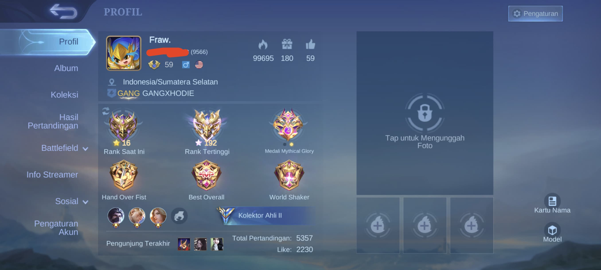
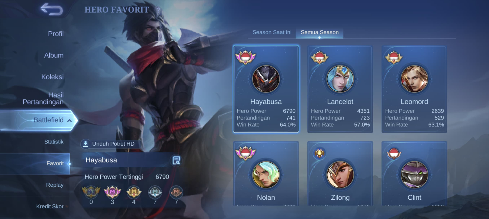

Artikel Mobile legends
Mobile Legends: Bang Bang adalah permainan video seluler bergenre multiplayer online battle arena (MOBA) yang dikembangkan dan diterbitkan oleh Moonton, anak perusahaan dari ByteDance.
Foto Profil Mobile Legends Saya
Mantan Immortal 😎

Foto Profil Mobile Legends Saya
Mantan Title Haya indonesia dan Nolan Indonesia 😏

Alur permainan
Alur permainan
Mobile Legends adalah permainan MOBA yang dirancang untuk ponsel. Kedua tim masing-masing berisi lima orang berjuang untuk mencapai dan menghancurkan markas musuh sambil mempertahankan markas mereka sendiri untuk mengendalikan tiga jalur, yang dikenal sebagai jalur "atas", "tengah" dan "bawah", yang menghubung ke setiap markas. Di masing-masing tim, ada lima pemain yang mengendalikan avatar sendiri-sendiri, yang dikenal sebagai "hero", dari perangkat mereka sendiri. Karakter lemah yang dikendalikan komputer disebut "minion", yang bersarang di markas tim lalu menyebar ke tiga jalur dan melawan menara serta lawan yang menghadang. Mengumpulkan EXP berguna untuk menaikkan level hero saat permainan berlangsung.
Tampilkan/Sembunyikan Konten